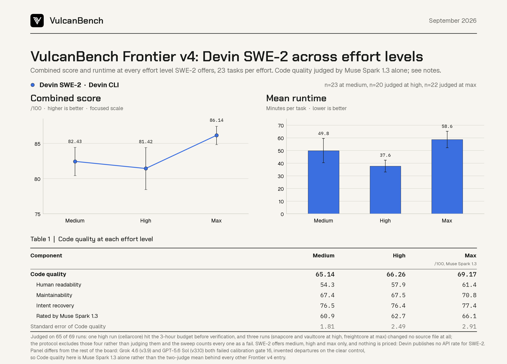

September 22, 2026 · 69 runs · Code quality protocol v3.11
Devin SWE-2 across every effort level
69 runs through the Devin CLI on a Devin subscription, 23 tasks at each of the three effort levels SWE-2 offers, with Code quality at 33% of the combined score. The first Cognition model on this suite, and the first entry whose Code quality comes from a single judge: Devin SWE-2 is rated by Muse Spark 1.3 alone after Grok 4.6 and GPT-5.6 Sol both failed calibration gate 16.
The effort knob does almost nothing until Max: combined score 82.43 at medium and 81.42 at high, with overlapping standard errors and 15 of 23 tasks passed at both, then 86.14 and 21 of 23 at Max. A companion card counts tokens and time at every effort: 7.53M to 16.80M raw tokens and 35.1 to 56.6 minutes per task. Cost is reported as unavailable, since Cognition publishes no per-token rate for SWE-2.
